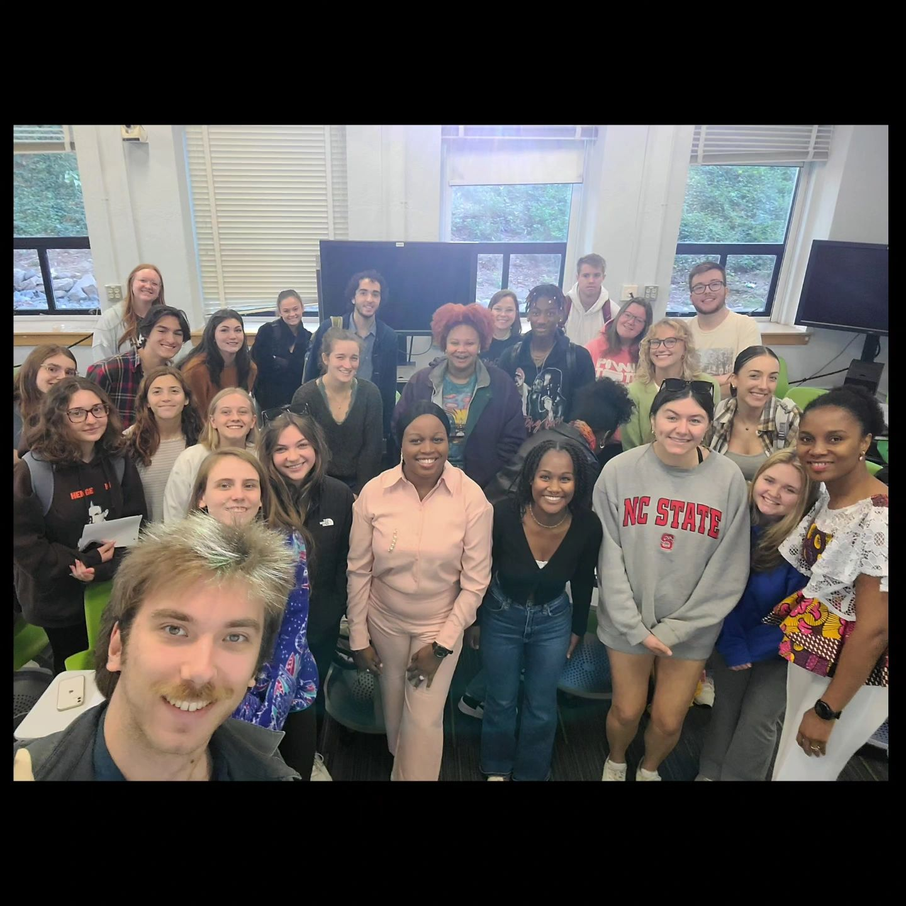

AI Training · Springfield, MO & online
AI creates possibility.
Your people
make it work.
Hands-on AI workshops, team training, and leadership briefings for small businesses and organizations across Springfield and the Ozarks, with Dr. Gbemisola Adetayo.
judgmentResponsible adoption
On stage / Dr. Gbemisola Adetayo
Upcoming in-person workshops · Springfield, MO
AI Business Implementation Labs
Build a practical AI business assistant, marketing workflow or customer follow-up system in three hours. January–March 2027. Early-bird registration from $99.
Four ways to begin
What needs to move
in your organization?
Choose a starting point. Each engagement is shaped around your audience, readiness, and priorities.
Executive briefings
Align your leadership.
Explore this format
Shared understanding of AI opportunities, readiness, and decision ownership.
Discuss executive briefings ↗ 02
02Applied workshops
Bring a real workflow.
Explore this format
Map the work. Identify an AI opportunity. Define a bounded next step and a useful measure.
Discuss applied workshops ↗
03Workforce training
Build everyday capability.
Explore this format
Practice prompting, context, output evaluation, and responsible use in the work your teams do.
Discuss workforce training ↗04Conference keynotes
Open the conversation.
Explore this format
Give your audience a practical perspective on AI transformation and the future of work.
Discuss conference keynotes ↗What participants say
Practical rooms.
Real results.
From conference sessions in Springfield to an 8-week AI cohort, here is what people say after the training.
“It’s been amazing to hear participants share how deeply impacted they were by your classes—not just in learning AI, but in applying it to real work, businesses, and everyday productivity.”
“Her depth of knowledge, clarity, and passion made a huge difference to the cohort.”
“Over the 8 weeks, I learned so much more than just how to use AI tools. I learned how to think differently, ask better questions, create better prompts, build ideas, solve problems…”
“The session was very informative and practical, and it helped me better understand AI, its capabilities, and how it can be applied to improve productivity…”
“You made the class so engaging and easy to follow.”
“Dr Gbemi broke it down for better understanding and attended to all our questions.”
“The need to analyse an AI-powered system and its associated risks before deciding to use it. She did a good job breaking it down.”
“Learning to input proper prompts using the framework and other techniques, to get the output I actually want.”
“I enjoyed your presentation at STC Squared.”
The learning journey
Start with work.
Build judgment.
Move to action.
Select a step to see how learning connects to adoption. The scope and learning objectives are agreed for your engagement.
Make the business question clear.
Connect AI capabilities and limitations to a real organizational priority.
judgmentValue · Readiness · Accountability

Meet your facilitator
A strategic perspective.
A practical room.
Dr. Gbemisola Adetayo connects AI strategy, workforce capability, workflow transformation, and governance to the decisions people make at work.
Meet Dr. Adetayo ↗Shape your session
A focus that fits your people.
Explore the topic groups, then bring your priorities to the planning conversation.
01 Lead the change +
AI foundations · Strategy and readiness · Workforce change · Leading responsible transformation
02 Find the value +
Workflow opportunities · Use-case prioritization · Augmentation and automation · Measuring business value
03 Build the practice +
Prompting and context · Output evaluation · Human accountability · Practical governance and responsible use
A record of programs brought to organizations.
For the people leading, enabling, and doing the work.
For individuals · AI Ready Leaders
Build practical AI skills for your professional goals.
Live online workshops and personalized coaching for professionals, experts, entrepreneurs and emerging thought leaders. Learn to build AI-powered workflows, develop your ideas and create practical professional assets.